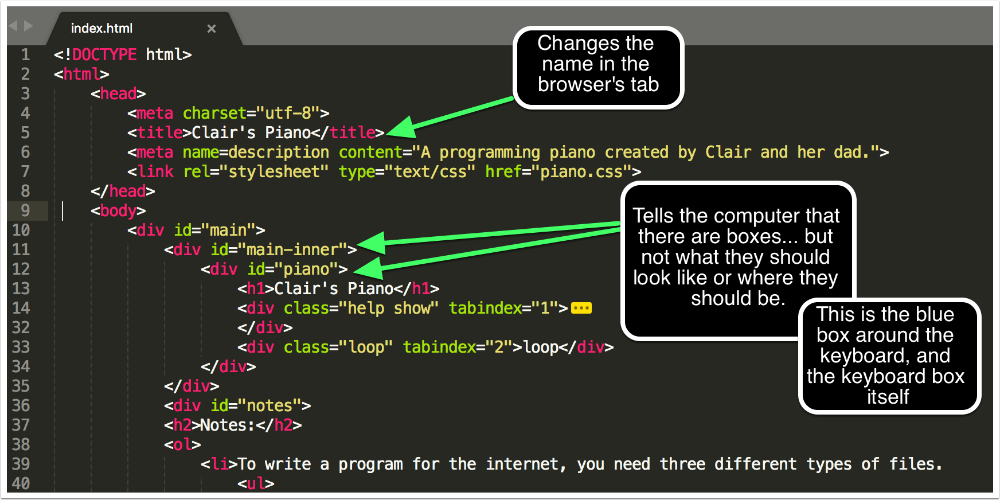
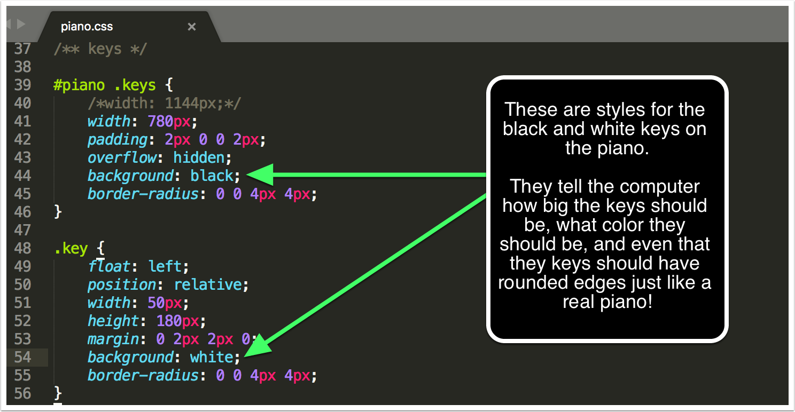
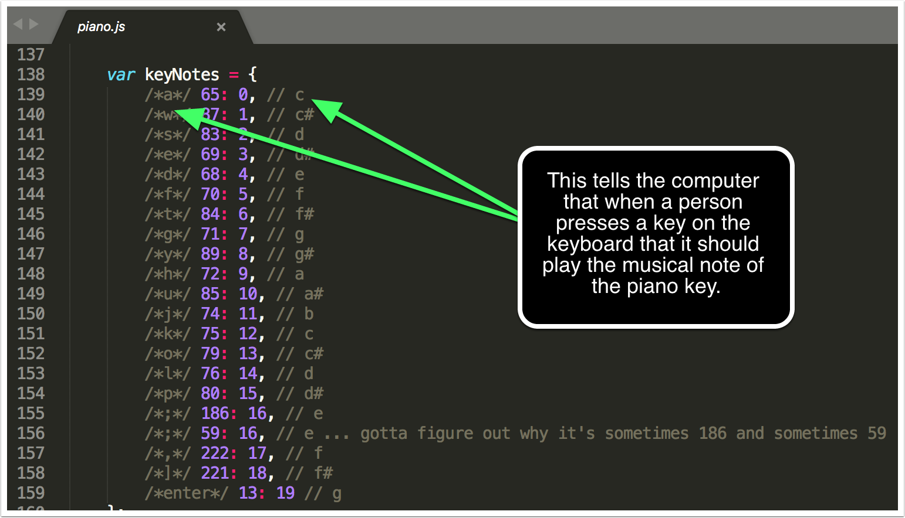

Clair's Piano
Controls:
play using home row & above /
change playable keys: “,” & “.” /
shift keyboard: ← & →
Extras:
Color - c /
Demo - m /
Visual mode - 8 /
Looper - 9 /
Help - 0
loop
Notes:
- To write a program for the internet, you need three different types of files.
- A Markup File (HTML), is used to create objects out of thin air (like a wizard's wand). This HTML file tells the computer to create all of the different boxes you see. The keys on the keyboard, the box around the keyboard, all of the words, and everything you see are created using a markup file.
 - A Style file (CSS), is used to color the boxes, to say how tall and wide the boxes are, and what colors and shapes should be used when the keys are pressed.
 - A 'Do Things File' (JavaScript), is used tell the computer to pay attention to where you click, what keys on the keyboard are pressed, and what to do when things are clicked or pressed. 
- A Markup File (HTML), is used to create objects out of thin air (like a wizard's wand). This HTML file tells the computer to create all of the different boxes you see. The keys on the keyboard, the box around the keyboard, all of the words, and everything you see are created using a markup file.
- Sound moves in waves. Two keys down from 'middle C' is the musical note 'A'. A's waves vibrate 440 times a second, but every note in the musical alphabet vibrates a different number of times a second.
- Guitars, like pianos use strings. And are a great way to actually see how sound vibrates the air.